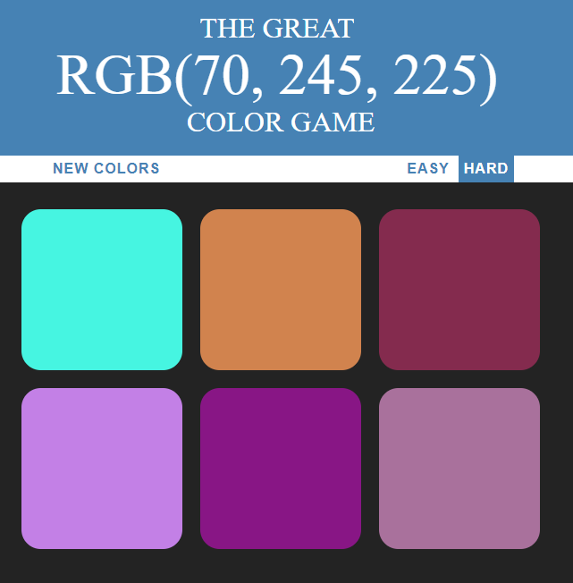

An example, The first photo is A women that has red eyes from the camera and in the second photo is after I removed the red eye.
Adobe Photoshop is a raster graphics editor. A large portion of its features are geared towards editing and retouching digital photographs. However, it is also capable of editing digital video frames, rendering text, 3D modeling and developing contents for web.
Photo Restoration
I used Adobe Photoshop to restore this old photo. I made some touchups to the first black and white photo and added color to the second photo
Adobe Photoshop is a raster graphics editor. A large portion of its features are geared towards editing and retouching digital photographs. However, it is also capable of editing digital video frames, rendering text, 3D modeling and developing contents for web.
Business Card
I used Adobe Illustrator to make this business card as close to the origional as possible.
Adobe Illustrator is a vector graphics illustration and design tool.
Flyer
I used Adobe Indesign to make this flyer for my computer buisness that I made up for an old project.
Adobe InDesign is a desktop publishing application
Color Game

I used Adobe Dreamweaver to make this game. I made this durring last years coding course by using JavaScript and Css.
Adobe Dreamweaver is an HTML editor geared towards professional web development.
bootable live os
This is the first video I ever made with Adobe Premiere and I tried to allign the music with the video but scence this video i have imporved greatly at making videos
Adobe Premiere Pro is a real-time, timeline-based video editing app. Premiere is optimized for working on computers with more than one CPU, graphic cards and computer monitors. It supports the contemporary digital camera and capture card feeds, as well as their file formats, as input.


{kind=link}
{kind=link}